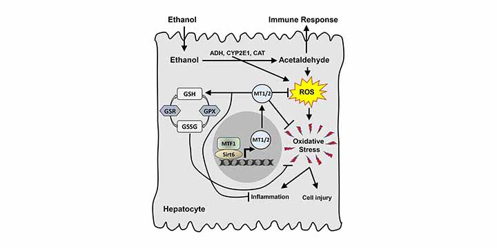
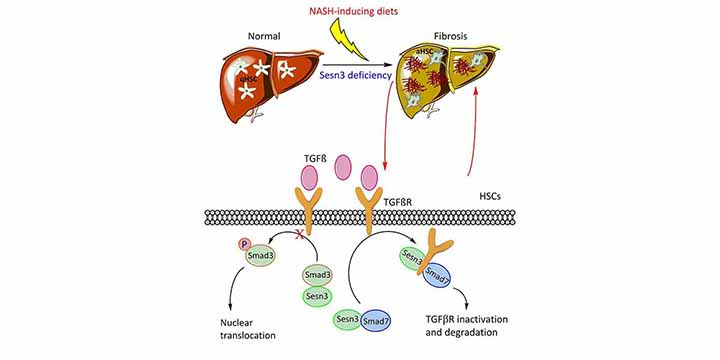
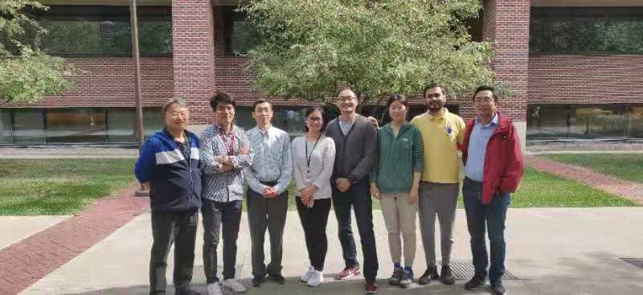

Welcome to the Charlie Dong Lab in the Department of Biochemistry and Molecular Biology, Indiana University School of Medicine! The Dong Lab are doing cutting-edge research on alcoholic and metabolic associated fatty liver disease, fibrosis, diabetes, obesity, aging, and cancer.
We are using the state-of-the-art molecular biology technologies to study key transcription factors like FOXO1, epigenetic regulators such as SIRT1 and SIRT6, autophagy regulator ATG14, cell signaling regulators SESN3, and lipid metabolism enzyme PNPLA3.
Research update
Dr. Dong has received a new NIH grant to study how autophagy regulates lipid metabolism. This will help understand the fundamental biology and reveal potential therapeutic targets.
Xiaolin Zhong, Menghao Huang, et al. have discovered a novel mechanism of hepatic fibrosis regulation by SIRT6. This new work has been recently published on Cellular and Molecular Gastroenterology and Hepatology. PMID: 32305562. DOI: 10.1016/j.jcmgh.2020.04.005